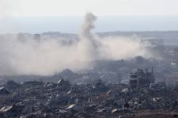
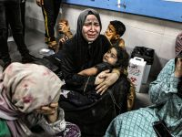

The history of the genocide of Palestine
 It has been 77 years since the Nakba, or the Palestinians’ experience of dispossession and loss of their homeland as of 2025. Every year on May 15, Palestinians around the world mark the Nakba, or catastrophe, referring to the ethnic cleansing of Palestine in 1948. Having secured the support of the British government for the creation of a Jewish state in Palestine, on May 14, 1948, as soon as the British Mandate expired, Zionist forces declared the establishment of the State of Israel, triggering the first Arab-Israeli war. The remainder of the people left in Palestine were divided into what are now the occupied West Bank and the besieged Gaza Strip. Between 1947 and 1949, Zionist military forces attacked major Palestinian cities and destroyed some 530 villages. About 15,000 Palestinians were killed in a series of mass atrocities, including dozens of massacres. Israel’s military control over the Palestinian people affects every aspect of their lives, from what services they can access and where they can travel to whom they can marry and where they can live. For Palestinians, Nakba is not a historical event, it is a continuing process of displacement that has never stopped. To learn more about the Palestinians' daily lives before the October 7th event, you can read "They Called Me a Lioness: A Palestinian Girl's Fight for Freedom" by Ahed Tamimi and Dena Takruri. Sources: Link #1 Link #2
What happened on October 7, 2023
According to a variety of sources, a surprise attack by Palestinian group Hamas on Israel, combining gunmen breaching security barriers and a barrage of rockets fired from Gaza, was launched at dawn during the Jewish holiday of Simchat Torah. Right after, the Israeli air force started carrying out attacks in Gaza. Israel's sources say that some 700 people were killed. Israeli air attacks continued late Saturday night as did rocket fire into southern Israel. Israeli forces have killed at least 60,034 Palestinians since the war on Gaza erupted in October 2023. Recently, the Integrated Food Security Phase Classification (IPC), a global hunger monitoring system, warned in a new report that the “worst-case scenario of famine” was unfolding in Gaza. Food consumption has sharply deteriorated, the IPC said in its report, with one in three people going without food for days at a time. Malnutrition rose rapidly in the first half of July, with more than 20,000 children being admitted for treatment for acute malnutrition between April and mid-July. More than 3,000 of them are severely malnourished. Israel has released many air strikes on Gaza since Oct. 7. They have bombed chruches, hospitals, homes, everything. They kill not only soldiers, but innocent children and women. It is horribly inhumane, and must be stopped. Sources: Link
Israel's War Crimes
 Israel has been committing war crimes against Palestinians for over 77 years. HRW (Human Rights Watch) documented a range of Israeli abuses, including extensive seizures of Palestinian land and property, unlawful killings, forcible transfer, drastic movement restrictions, administrative detention and the denial of citizenship to Palestinians. According to Aljazeera, Every year, Israel demolishes hundreds of Palestinian homes. Because of this, in thirteen years, 12,491 people were displaced. Israel also holds some 4,450 Palestinians – including 160 children, 32 women, and 530 administrative detainees – in prisons. Israeli settlements are heavily fortified Jewish communities built illegally on Palestinian land. Some 750,000 Israeli settlers live in at least 250 illegal settlements in the occupied West Bank and occupied East Jerusalem. Israeli settlements are illegal under international law. Sources: Link #1 Link #2
The U.S.'s Role
The US has provided Israel with over $310 billion worht of military aid since 1956. The US had a few reasons to keep their relations with Israel strong. Israel is the US's most trustworthy ally in the region and therefore is instrumental in protecting the US's regional interests. And the Middle East is a region the US has had interests in for many years due to its location and resources, etc. The Israelis provide the US with a large amount of intelligence in the region and according to interviews of ex-presidents (Nixon, in this case) their intelligence far exceeds the US's. Israel is also a massive innovator in many different industries, but specifically with America's interests, they have developed, or helped the US develop different military technologies that help give the US an edge. Because of these reasons the US gives Israel tons of military aid from our tax dollars instead of using to improve Americans' lives. To donate to organizations going out in the streets to protest, you can visit this website: https://donate.aroc.org/int/en/general Sources: Link